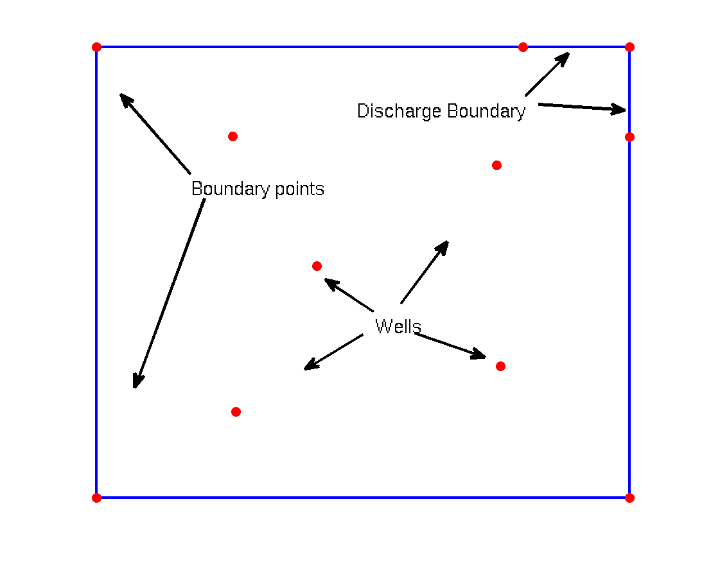
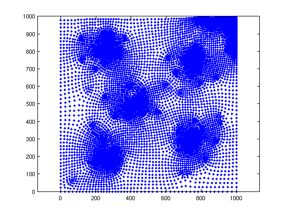
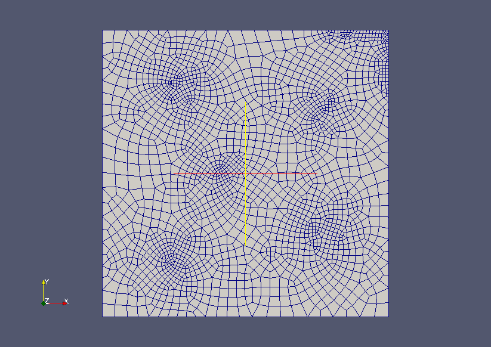

Mesh with quadrilaterals
| main | Tutorials | Functions | website |
The goal of this example is to show how to create quadrilateral meshes. In addition we will use quadratic quadrilaterals where each element has 9 degrees of freedom.

The domain is a rectangle with dimensions 1km x 1km. We want also to refine the top right boundary of the mesh. In the flow example this corresponds to a discharge boundary.
Fist we define the domain in a structure similar to a matlab shapefile
dom.Geometry='Polygon';
dom.X=[0 1000 1000 0 0 nan];
dom.Y=[0 0 1000 1000 0 nan];
Note that not all the fields that a shapefile has, are necessary (i.e. BoundingBox is not needed)
To refine the mesh along the top right boundary we create a dummy feature
dummyLine.Geometry='Line';
dummyLine.X=[800 1000 1000 nan];
dummyLine.Y=[1000 1000 800 nan];
dummyLine.DistMax=350;
dummyLine.DistMin=20;
dummyLine.LcMax=200;
dummyLine.LcMin=20;
Next we define the wells and set the fields for refinement.
xw=[255 750 413 758 261]; yw=[802 738 514 293 192]; for i=1:length(xw) wells(i,1).Geometry='Point'; wells(i,1).X=xw(i); wells(i,1).Y=yw(i); wells(i,1).DistMax=350; wells(i,1).DistMin=20; wells(i,1).LcMax=100; wells(i,1).LcMin=20; end
These features are all what we need to represent the geometry of the modeling domain. The nex step is to create an empty Constructive Solid Geometry object
Simple_quad=CSGobj_v2(2,1,10,20,10); % Dim, Npoly, Nline, Npoints, usertol
After the object is initialized we read the shapefiles using the method .readshapefile. Note that the we read first the variable that describes the aquifer outline.
Simple_quad=Simple_quad.readshapefile(dom); Simple_quad=Simple_quad.readshapefile(dummyLine); Simple_quad=Simple_quad.readshapefile(wells);
We initialized the mesh option structure and change the fields to the desired options. Here we will set as general maximum element size 200 m, element type quad for quadrilateral and element order 2 for quadratic. We have found that for quadrilateral it is better not to constraint the mesh on the features, therefore we will let the mesh to ignore the wells. The mesh will take into account the refinement around the wells but the wells willcorrespond to elements not to nodes.
mopt = msim_mesh_options;
mopt.lc_gen = 200;
mopt.el_type = 'quad';
mopt.el_order = 2;
mopt.embed_points = 0;
Next we write the Gmsh input file and run the program to generate the mesh:
Simple_quad.writegeo('Simple_quad',mopt); gmsh_path='/usr/bin/gmsh'; Simple_quad.runGmsh('Simple_quad',gmsh_path,[])
Info : Running '/usr/bin/gmsh Simple_quad.geo -2' [1 node(s), max. 1 thread(s)] Info : Started on Fri Apr 4 13:41:36 2014 Info : Reading 'Simple_quad.geo'... Error : 'Simple_quad.geo', line 23 : Point 3 already exists Error : 'Simple_quad.geo', line 24 : Point 5 already exists Error : 'Simple_quad.geo', line 25 : Point 6 already exists Error : 'Simple_quad.geo', line 26 : Point 7 already exists Error : 'Simple_quad.geo', line 27 : Point 8 already exists Error : 'Simple_quad.geo', line 28 : Point 9 already exists Error : 'Simple_quad.geo', line 29 : Point 10 already exists Error : 'Simple_quad.geo', line 30 : Point 11 already exists Info : Done reading 'Simple_quad.geo' Info : Meshing 1D... Info : Meshing curve 1 (Line) Info : 5 points found in points clouds (0 edges) Info : 39 points found in points clouds (2 edges) Info : Meshing curve 2 (Line) Info : Meshing curve 3 (Line) Info : Meshing curve 4 (Line) Info : Meshing curve 5 (Line) Info : Meshing curve 6 (Line) Info : Done meshing 1D (0.036002 s) Info : Meshing 2D... Info : Meshing surface 1 (Plane, Frontal Quad) Info : Blossom: 1378 internal 69 closed Info : Blossom recombination algorithm completed (0.040003 s) Info : Done meshing 2D (0.116008 s) Info : Refining mesh... Info : Meshing order 2, curvilinear ON... Info : Meshing curves order 2 (1/6)... Info : Meshing curves order 2 (2/6)... Info : Meshing curves order 2 (3/6)... Info : Meshing curves order 2 (4/6)... Info : Meshing curves order 2 (5/6)... Info : Meshing curves order 2 (6/6)... Info : Meshing surfaces order 2 (1/1)... Info : highOrderTools has been set up : 1812 nodes are considered Info : Surface mesh : Worst Face Distorsion Mapping 1 Gamma 0 Nb elem. (0<d<0.2) = 0 Info : Done meshing order 2 (0.012 s) Info : Blossom: 0 internal 0 closed Warning: 0 bytes allocated Info : Blossom recombination algorithm completed (0.112007 s) Info : Done refining mesh (0.144009 s) Info : Meshing order 2, curvilinear ON... Info : Meshing curves order 2 (1/6)... Info : Meshing curves order 2 (2/6)... Info : Meshing curves order 2 (3/6)... Info : Meshing curves order 2 (4/6)... Info : Meshing curves order 2 (5/6)... Info : Meshing curves order 2 (6/6)... Info : Meshing surfaces order 2 (1/1)... Info : highOrderTools has been set up : 7196 nodes are considered Info : Surface mesh : Worst Face Distorsion Mapping 1 Gamma 0 Nb elem. (0<d<0.2) = 0 Info : Done meshing order 2 (0.056003 s) Info : 7937 vertices 1947 elements Info : Writing 'Simple_quad.msh'... Info : Done writing 'Simple_quad.msh' Info : Stopped on Fri Apr 4 13:41:37 2014
After the mesh is succesfully generated we read the mesh into matlab workspace
[p MSH]=read_2D_Gmsh('Simple_quad');
Reading points... Reading Elements...
Matlab does not offer any function to visualize meshes with quadratic quadrilateral elements. However we can plot the mesh nodes:
plot(p(:,1),p(:,2),'.') axis equal
To visualize the mesh we have to use paraview. Note also that Gmsh can be used to visualize the *.msh file even before we read the mesh into the matlab workspace.
WriteVtkMesh('Simple_quad',MSH(3,1).elem.id,p,[],[],'quad');
Writing Nodes coord... Writing Elements...
